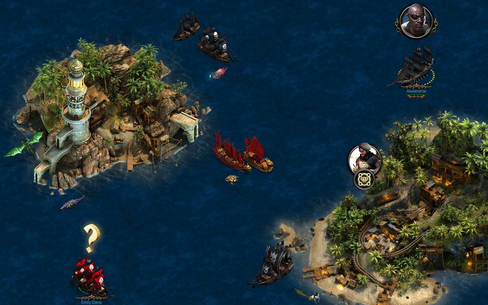
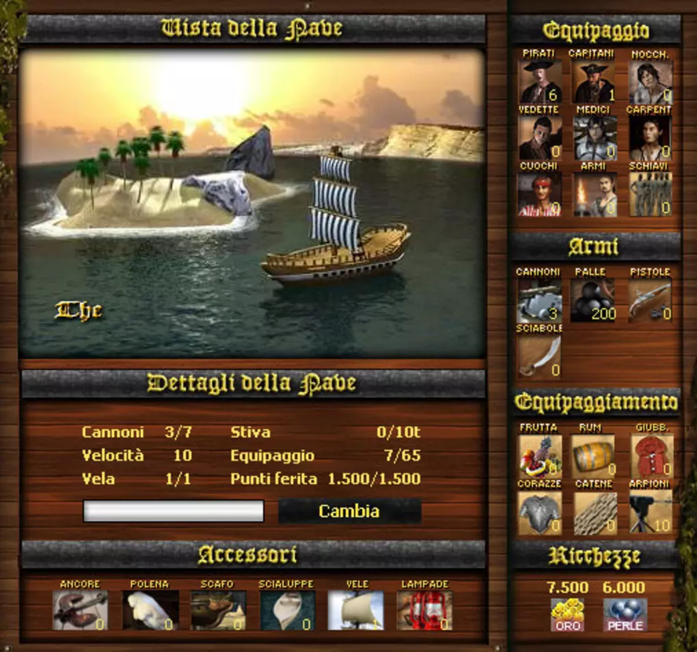
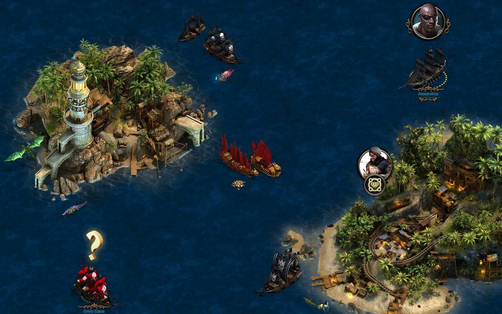
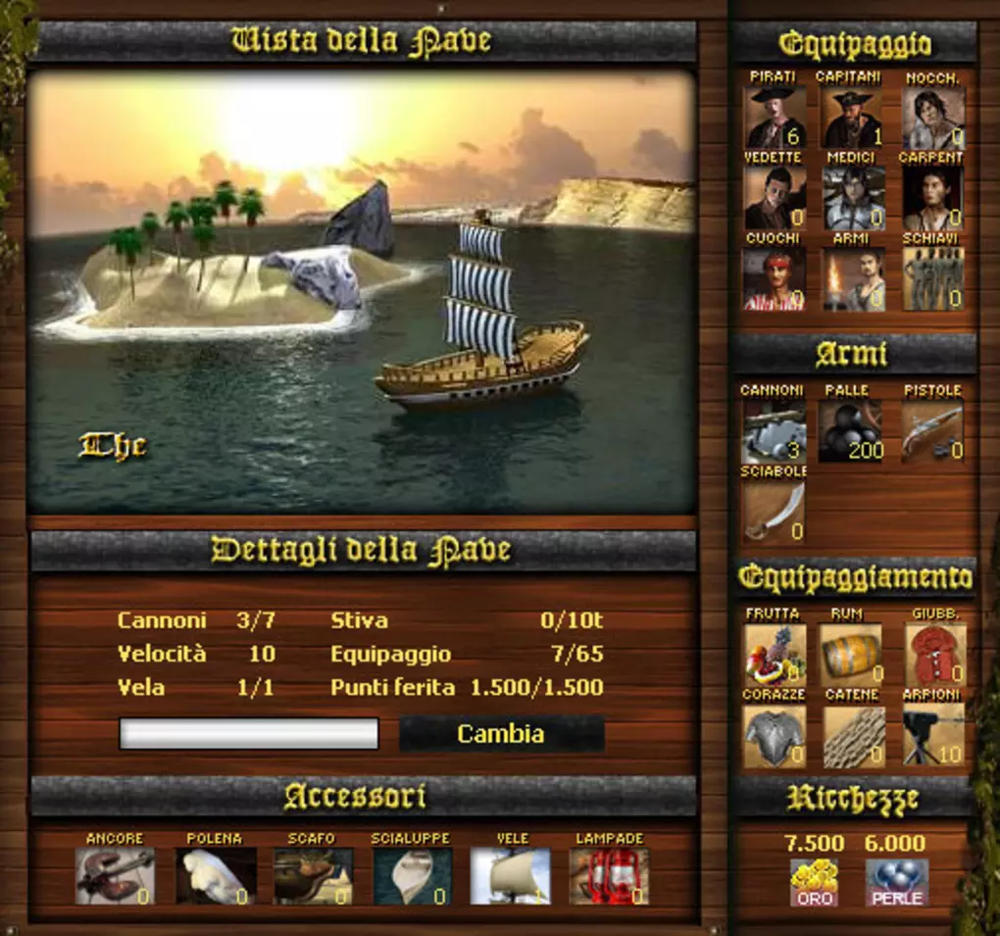

Benvenuti nell'incantevole mondo di "Seafight", un regno online di avventura marina che cattura l'essenza dell'era dei pirati in modo straordinario. Creato dalla Bigpoint Games e lanciato nel 2006, "Seafight" ti invita a solcare gli oceani sconfinati, esplorare isole remote e scontrarti con avversari temibili in epiche battaglie navali. In questo universo virtuale, abbraccerai il ruolo di un coraggioso capitano pirata, determinato a lasciare il segno nei libri di storia dei mari.
L'atmosfera di "Seafight" è densa di misteri e pericoli, poiché ogni onda nasconde segreti da scoprire e tesori sepolti da conquistare. La tua nave diventerà il tuo fedele compagno di avventure, e potenziarla sarà essenziale per affrontare sfide sempre più impegnative. Aggiungi potenti cannoni, equipaggiamenti speciali e personalizzazioni strutturali per creare una nave veramente unica, pronta a superare ogni ostacolo.
Le battaglie navali costituiscono il cuore pulsante di "Seafight". Affronta altri pirati in scontri dinamici, dove la strategia è fondamentale e ogni manovra può cambiare le sorti della battaglia. Schiera la tua nave, scegli quando aprire il fuoco e prendi decisioni rapide per affrontare le sfide più impegnative che i mari possono offrire. Conquistare i mari significa guadagnare risorse preziose, aumentare la tua fama e accrescere la tua influenza tra gli altri pirati.
Ma "Seafight" non è solo battaglie e saccheggi. Esplora una vasta mappa composta da isole, porti e insediamenti. Completa missioni, partecipa a eventi speciali e svela le storie di terre sconosciute mentre ampli il tuo dominio sui mari. Unisciti a gilde di pirati per condividere risorse e forze in battaglie strategiche, competi in tornei e dimostra di essere il capitano più temuto e rispettato.
Grazie a un'attenzione meticolosa ai dettagli e alla grafica coinvolgente, "Seafight" offre un'esperienza di gioco immersiva. Gli ambienti marini sono incredibilmente realistici, con onde che si infrangono sulle scogliere e tramonti che dipingono il cielo con sfumature di rosso e arancione. La colonna sonora aggiunge un tocco di epicità, accompagnando ogni tua mossa con note avventurose.
In "Seafight", sei il maestro del tuo destino, il capitano del tuo destino marittimo. Sfida te stesso e i tuoi compagni di gioco a diventare il più grande pirata dei mari, navigando verso la gloria, la ricchezza e l'infamia. I sette mari ti attendono con segreti da svelare, sfide da superare e avventure senza fine da vivere. Prepara la tua nave, issa le vele e immergiti nell'avventura epica di "Seafight".
 


